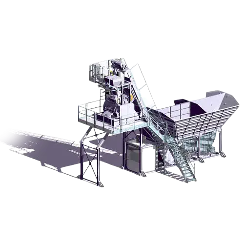
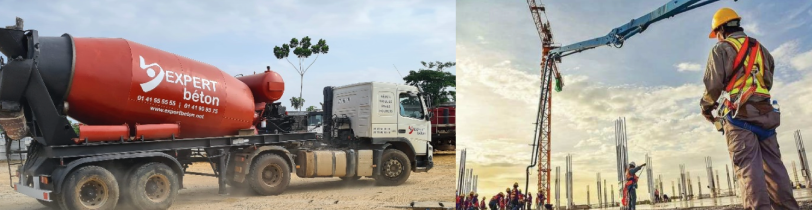
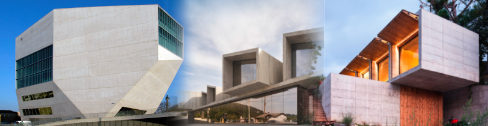

Machines et Equipments
La fabrication du béton comprend les phases suivantes :
La manutention et le transport des granulats » l’approvisionnent et le stockage des matières premières » le dosage automatique des matières. Le chargement du malaxeur et malaxage du béton frais » la vidange du malaxeur » le transport et décharge du béton frais, direct ou pompage.

Le dosage des métiers premières à la centrale à béton de EXPERT BETON est contrôle par automatismes qui garantissent la précision et la régularité de l’ensemble des formules de bétons produites. En respectant les tolérances sur les pesées selon la norme EN206-1.
Transport et livraison
Alliée à la capacite de production de la centrale installée. EXPERT BETON possède actuellement sa propre flotte composée de plus de 7 camions bétonnières pour le transport du béton. De la centrale jusqu’au client. Permettant ainsi une grande réactivité a toute demande avec des camions bétonnières dont les capacités varient, allant de 8m3 a 10 m3.

En cas de nécessité, nous louons des camions bétonnières pour les suppléments de commande. Pour le service de pompage de béton EXPERT BETON possède une (01) autopompes composées de lances dont les longueurs varient entre 37m. Lorsque la longueur est insuffisante, nous avons à notre disposition une série de tubes flexibles permettant d’augmenter la portée de la lance.
Département technique
Notre département technique a la responsabilité d’étudier et d’optimiser des formulations des bétons a propriétés spécifiées, dans le respect des normes en vigueur EN 206-1 et de contrôle de qualité de toutes les matières et de béton frais et durci.
En phase de production, le contrôle apporte les garanties nécessaires au bon comportement du béton durci. En s’appuyant sur toute une série d’opérations de contrôle couvrant toute la chaine de fabrication et de mise en œuvre :
- Contrôle de fabrication en usine des bétons prêt à l’emploi.
- Contrôle du processus de fabrication et de transport.
- Contrôle à la mise en œuvre avant, pendant et après bétonnage.
- Contrôle du béton frais et durci.
